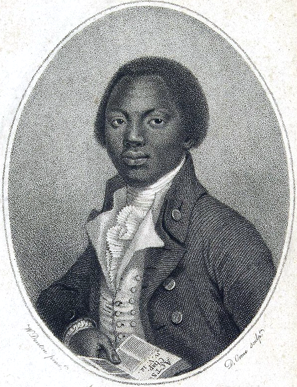

Directions: Fill in the chart as we study each part of the lesson. Keep this page in your notebook. You will use it again on the review day before the unit test.

| Part | What the system did | The evidence for it | What enslaved people did |
|---|---|---|---|
| The trade and the crossing | |||
| The law | |||
| The Chesapeake | |||
| The lowcountry | |||
| Resistance and voice |
The system in one paragraph. Using at least three rows of the chart, write a paragraph that answers the lesson question. How was the Atlantic slave trade organized, and what did enslaved people endure, build, and resist?
| Part | What the system did | The evidence for it | What enslaved people did |
|---|---|---|---|
| The trade and the crossing | Moved people as cargo: guns, cloth, and metal traded on the Guinea coast for captives, who were packed below deck for a crossing of six weeks to three months. | The Trans-Atlantic Slave Trade Database's estimates, some 12.5 million forced aboard and about 10.7 million surviving, and Equiano's 1789 account of the hold, in which about 1.8 million died. | Endured, and left the record: Equiano's narrative, published in London in 1789 to argue against the trade. |
| The law | Made slavery hereditary and permanent: status followed the mother from 1662, baptism did not free from 1667, and codes denied courts, assembly, and arms. | Virginia's statutes in Hening's Statutes at Large, vol. 2, and South Carolina's Negro Act of 1740, declaring enslaved people chattels personal forever. | Pressed against every seam the law left, in families the law refused to recognize, in reading learned against the codes, and in flight where any opening appeared. |
| The Chesapeake | Worked tobacco in gangs, with skilled trades beside the fields, and sold family members away at deaths, debts, and divided estates. | The reading's account of a population growing by birth from the early 1700s, which made families the region's central institution under threat. | Built families: children named for kin in Africa and Virginia, marriages held without legal standing, and kin lines kept across plantations. |
| The lowcountry | Grew rice for export where enslaved people outnumbered white colonists, under the task system and the Negro Act's controls. | Planters paid higher prices for captives from Africa's rice coasts because the diking, flooding, and timing knowledge was theirs, as the reading states. | Turned finished tasks into gardens, poultry, hunting, fishing, and market sales, and formed the Gullah language and culture in the Black majority. |
| Resistance and voice | Answered resistance with patrols, passes, and codes, most completely in the Negro Act of 1740, which fined teaching an enslaved person to write. | The Stono Rebellion of September 1739, and the act's Section XXXVI, aimed at the meetings, drums, and horns that had organized it. | Resisted daily and in arms, and spoke in print: Phillis Wheatley's Poems on Various Subjects, London, 1773, turned her readers' doctrine against their scorn. |
The system in one paragraph. Strong answers run the chart as one account. Ships, coastal sales, and colonial demand organized the trade, and statutes and codes made its product permanent. Inside that system, enslaved people supplied the rice knowledge that built the lowcountry's wealth, built Chesapeake families against the threat of sale, turned task hours into gardens and markets, and formed Gullah. They resisted in slowed work and flight, in the Stono march of 1739, and in print, where Wheatley's 1773 poem answered the system's defenders from their own doctrine. Machinery without the people, or people without the machinery, answers half the lesson question.